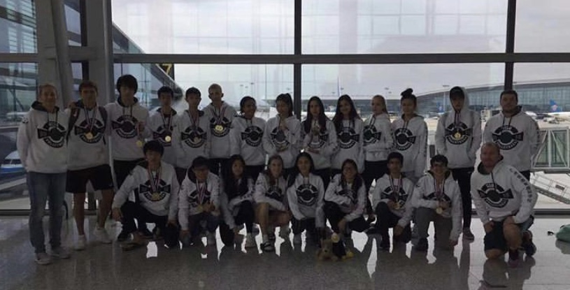

Volleyball
The frist season of sport in Jeet's school is volleyball. Though he does not watch the game and have that much of a passion for it, as he does for other sports, he still participated in this club. This is becasue Jeet likes participating in tema sports as it builds strong friendships and sense of community. This year was his second year trying out for the varisty team, and he made it. Therefor, as the libero for Utahloy's volleyball team, he travelled to the final tournmanet (ACAMIS) which was hosted in Beijing this year.

Basketball
This year, in Grade 10, Jeet participated in his school basketball team once again. This year more than 25 people tried out, students ranging from grades 9-12. Though Jeet did not make hte varsity team the reason he joined the team is because he enjoys not only playing the sport with his friends in hsi free time, but also enjoys watching the game and talking about it with his friends

Student Council
In Grade 10, beside assignments and tests, for Jeet to pass the MYP programme, he had to complete a certain amount of community service hours. One of the club he joined to do so, was his school's "Student Council". This year was his 3 year, and he was elected vice president of the club. The council as a whole was much more succesful than its predecesors, as they succesfully hosted events such as a candy gram, where they not only raised money that can be used to help fund other clubs or be donated charity, but as well made an identity for themselves. Jeet hopes to be part of the council again next year, and be co-presidents with his friends.
The Howl
Another club Jeet joined this year, for the third time in a row, was "The Howl" (because his school mascot is a wolf). This is the school's official student newsletter, which is not only available to students and teacher, but as well parents now. This year Jeet was a writer again, and unlike the last year however, he had his own section in the website. He wrote articles about pop culture, as well as reviews for events that occured during the school year. He hopes to take part in this next year again, and expand the type of content he writes.